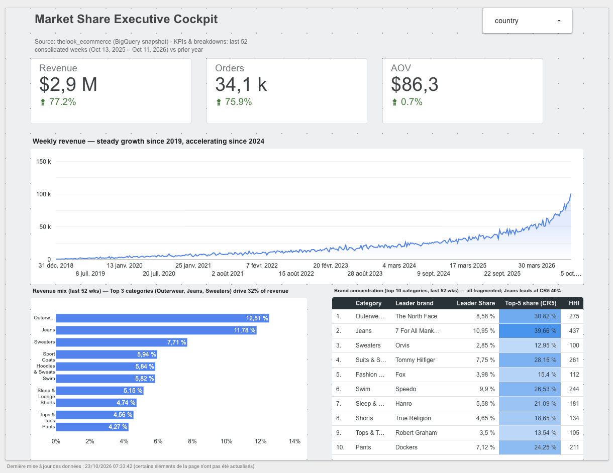

Three questions for leadership
The goal was a one-page cockpit a manager can read in five seconds — and an analysis that goes beyond revenue, into how competitive each product market really is.
- How is the business growing, and what drives the growth — more customers or bigger baskets?
- Where does revenue come from — which categories carry the business?
- Inside each category, is the brand market dominated by a few leaders, or fragmented?
The dashboard

Key findings
Period: the last 52 consolidated weeks (Oct 13, 2025 – Oct 11, 2026), compared with the prior year.
Revenue growth comes almost entirely from more orders; the average basket barely moved. Acquisition works — the next lever is basket size: cross-selling and bundles.
The top three categories — Outerwear, Jeans and Sweaters — make up only 32% of revenue. The next seven each weigh between 4% and 6%: no single category is critical.
Every top-10 category has an HHI below 500 — far from the 1,800 threshold for "highly concentrated" in the US 2023 Merger Guidelines. Jeans is the most concentrated (top five brands ≈ 40%, leader ≈ 11%); Sweaters the least (≈ 13%). Concentrated categories call for partnerships with a few leading brands; fragmented ones compete on assortment and price, and are natural candidates for a private label.
A layered model, one grain per layer
Each layer does one job, and every SQL file states its grain — what one row represents. Most of the problems below were, at heart, grain problems.
Problems found, and how I fixed them
The first version of the dashboard looked fine at a glance. Each step below started from something that looked wrong, was diagnosed with data rather than assumptions, and ended with a fix in the model — not a cosmetic tweak in the BI tool.
Weeks stored as text
- SYMPTOM
- The week was a text label (
2026-W42), parsed back into a date inside Looker. The year-crossing week was split into two rows. - CAUSE
%Wweek numbers and ISO weeks disagree at year boundaries: Dec 30–31 and Jan 1–5 got two different labels for the same week.- FIX
- A real
DATEcolumn in the warehouse, and a label derived from it (ISO year%G+ ISO week%V), so the two can never disagree.
DATE_TRUNC(DATE(created_at), ISOWEEK) AS week_start_date, -- Monday of the ISO week FORMAT_DATE('%G-W%V', DATE_TRUNC(DATE(created_at), ISOWEEK)) AS order_week -- label derived from the date
A comb-shaped trend line
- SYMPTOM
- After switching to the date column, the line dropped to zero between every weekly point.
- CAUSE
- Looker drew weekly data on a daily axis and filled the six missing days with zeros.
- FIX
- Set the dimension's granularity to ISO Year Week instead of hiding the gaps in the style settings.
A +73% jump that wasn't real
- SYMPTOM
- The last complete week nearly doubled versus the week before.
- DIAGNOSIS
- I listed hypotheses (synthetic growth, future timestamps, a single anomalous day) and tested them. Weekly view: no future dates, every week complete. Daily view: orders stable at 170–200 a day, then growing 30–60% per day over the last seven days. The source keeps back-filling recent days — those days are not consolidated yet.
- FIX
- Keep only ISO weeks that ended more than seven days before the latest date.
-- daily diagnosis: single-day jump, or gradual ramp? SELECT DATE(created_at) AS order_date, COUNT(DISTINCT order_id) AS nb_orders FROM int_order_line_enriched WHERE DATE(created_at) >= DATE_SUB(CURRENT_DATE(), INTERVAL 21 DAY) GROUP BY 1 ORDER BY 1;
Orders overstated by 41%
- SYMPTOM
- The KPI card showed 125.8k orders and an average order value of $61.6 — suspiciously low.
- CAUSE
- The mart's grain was week × category × country. An order with jeans and socks was counted once per category, so summing across categories double-counted it.
- FIX
- Count orders at their natural grain in a dedicated week × country mart, and compute AOV as a ratio of sums, never an average of averages.
- CHECK
- A reconciliation query: true orders 89,105 vs 125,789 (+41%); revenue identical in both marts to the cent. AOV was understated by ~30% ($61.6 → $86.9).
SELECT (SELECT SUM(total_orders) FROM mart_weekly_kpi) AS orders_category_grain, -- 125,789 (SELECT SUM(total_orders) FROM mart_weekly_country_kpi) AS orders_true, -- 89,105 (SELECT SUM(total_revenue) FROM mart_weekly_kpi) AS revenue_a, -- equal ... (SELECT SUM(total_revenue) FROM mart_weekly_country_kpi) AS revenue_b; -- ... to b
History that changed every day
- SYMPTOM
- Two days apart, with the same cutoff, totals for past weeks had changed.
- CAUSE
- The public dataset regenerates its history daily. Any number quoted in a report would stop matching the next morning.
- FIX
- A raw snapshot layer: the four source tables copied into frozen tables, with a
_snapshot_attimestamp. The consolidation cutoff is anchored on the snapshot's latest date, not on today — otherwise it would keep sliding into unconsolidated days.
AND DATE(created_at) < ( -- cutoff anchored on the snapshot's latest date, not on CURRENT_DATE() SELECT DATE_TRUNC(DATE_SUB(MAX(DATE(created_at)), INTERVAL 7 DAY), ISOWEEK) FROM raw_orders )
From revenue mix to real market share
- INSIGHT
- "Category revenue ÷ total revenue" is a revenue mix, not a market share. Market share is a brand's revenue within its category. Before choosing a chart, I explored each market's structure: 138 to 367 brands per category, leaders holding only 3–11%.
- APPROACH
- With markets this fragmented, ten short bars would say nothing. So concentration itself became the subject: leader, leader share, CR5 and HHI per category, over the last 52 weeks — computed with window functions.
WITH shares AS ( SELECT *, revenue / SUM(revenue) OVER (PARTITION BY category) AS share, -- brand share in its category ROW_NUMBER() OVER (PARTITION BY category ORDER BY revenue DESC) AS rnk FROM cat_brand ) SELECT category, MAX(IF(rnk = 1, brand, NULL)) AS leader_brand, SUM(IF(rnk <= 5, share, 0)) AS cr5, -- top-5 concentration ratio ROUND(10000 * SUM(POW(share, 2))) AS hhi, -- Herfindahl-Hirschman Index RANK() OVER (ORDER BY SUM(revenue) DESC) AS revenue_rank FROM shares GROUP BY category;
A title contradicted by a small sample
- SYMPTOM
- The table title claimed no category exceeded an HHI of 1,000 — but "Suits" showed 1,294.
- CAUSE
- Tiny categories (one sold about $4k in a year) look concentrated only because a handful of orders decide the ranking.
- FIX
- A
revenue_rankcolumn in the mart and a filter on the top 10 categories by revenue; the title now states its scope and every number in it was re-checked.
One page, three time windows
- SYMPTOM
- The revenue-mix chart and the concentration table listed different top-10 categories side by side.
- CAUSE
- KPIs and the mix covered the full history since 2019; the concentration table covered the last 52 weeks.
- FIX
- One period for every KPI and breakdown — the last 52 consolidated weeks, with a year-over-year comparison on the KPI cards. Only the trend chart keeps the full history, which is its purpose.
Metrics
| METRIC | DEFINITION |
|---|---|
| AOV | Revenue ÷ distinct orders — a ratio of sums, never an average of pre-computed averages |
| Revenue mix | Category revenue ÷ total revenue |
| Brand share | A brand's revenue in a category ÷ that category's revenue |
| CR5 | Sum of the five largest brand shares in a category |
| HHI | Σ (brand share)² × 10,000 — uses every brand and weights large players more |
Limitations
- Synthetic data. thelook_ecommerce is generated: the growth rates and the recent acceleration reflect how the data is produced, not a real market. The project demonstrates the method.
- Share of this retailer's sales. "Market share" here means a brand's share within this retailer's category sales, not of the external market.
- Fixed period. Dashboard dates match the snapshot; refreshing the snapshot means updating them.
- Static publication. Built in the BigQuery sandbox, where tables expire after 60 days. The dashboard is published as an image; the SQL in the repository rebuilds everything from the public source.